“Between stone, timber, photographs, and artifacts that have weathered time, Boutique Hotel Teatro invites you to discover a story that continues to be written.”
Centuries of history
in a single home
According to historical records associated with the building, the house that today welcomes Boutique Hotel Teatro dates back to the 12th century. Since then, it has weathered centuries of change, distinct eras, and varied functions, preserving within its stone walls the traces of those who passed through.
In 2024, the house was granted new life as Boutique Hotel Teatro, in a project dedicated to establishing a dialogue between past and present, safeguarding original architectural elements and authentic heritage.
The hotel's historical presentation highlights the preservation of original architectural features and the building's transformation in 2024.
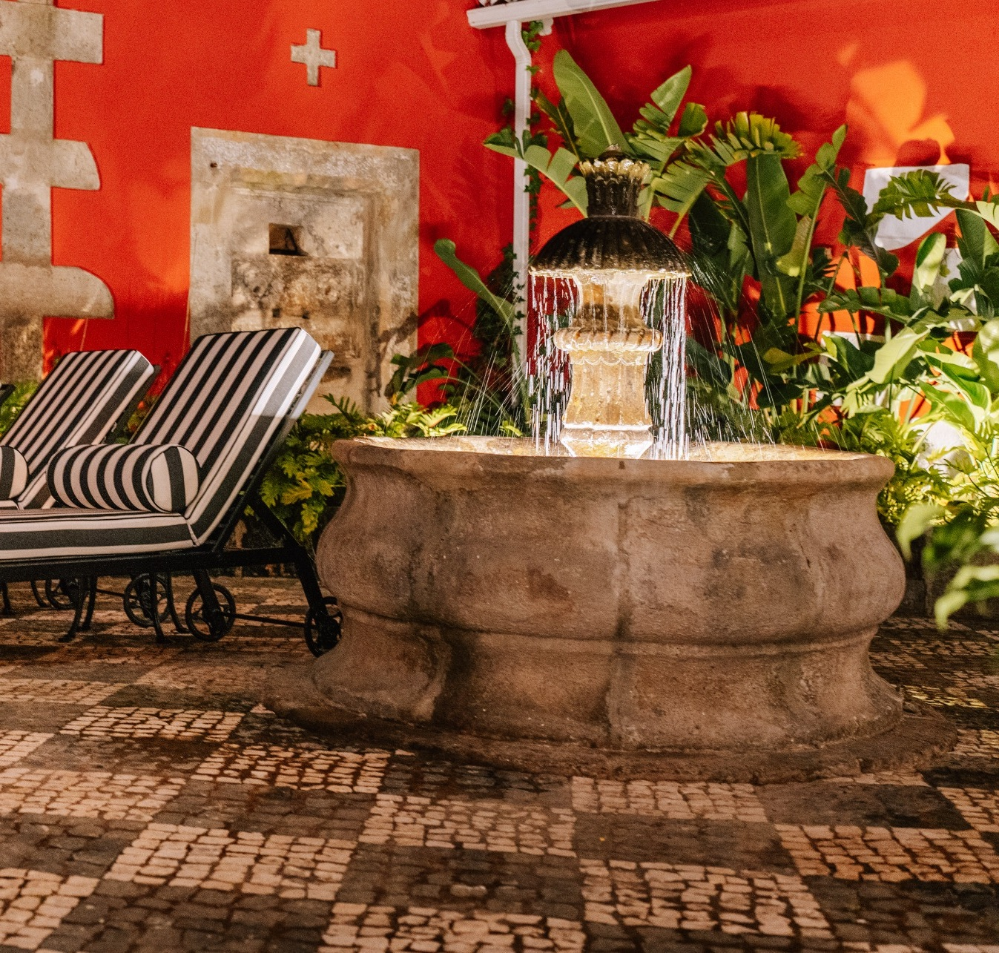
António Sieuve
de Séguier
There is a historical possibility, preserved in the memory of the hotel, that this was once the residence of António Sieuve de Séguier, recognized as the first Consul of France in the Azores.
During an era when Angra assumed a pivotal role along Atlantic maritime routes, the house was immersed in a continuous crossroads of travelers, trade, ideas, and cultures.
Today, we cannot know with absolute certainty everything these walls witnessed. Yet the possibility that António Sieuve de Séguier lived here adds another profound layer to the history of this house.
The memory preserved by the hotel associates the building with António Sieuve de Séguier and identifies him as the first Consul of France in the Azores.
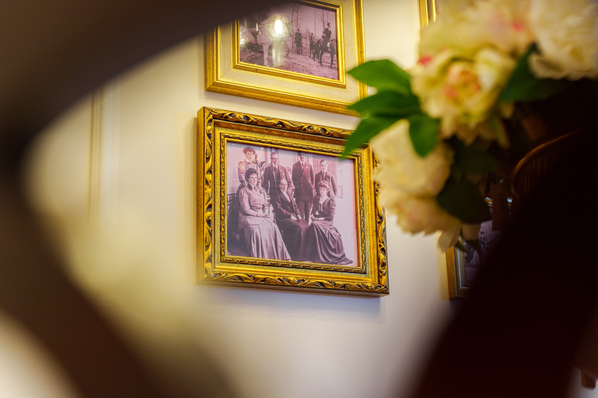
Memorial of the Ilhéus
das Cabras
There are places that belong to the landscape and, at the same time, to the deepest memory of an island. Off the southeast coast of Angra do Heroísmo rise two imposing volcanic stone islets commonly known as Ilhéus das Cabras — though archival memory preserves their presumed and true name: Os Ilhéus do Coronel Canto.
Carved by ocean swells and time, these islets served for decades as an exclusive natural pasture for sheep. It is precisely in this maritime landscape that the roots of our house intertwine: the ancestors of the hotel’s founding family were sheep breeders and wool producers, devoted to the craft and harvest of pure wool.
At Boutique Hotel Teatro, we keep this living heritage alive. We preserve on display priceless historical tools that belonged to this daily labor, including the original scales used to weigh the wool and the manual iron shears used during the shearing.
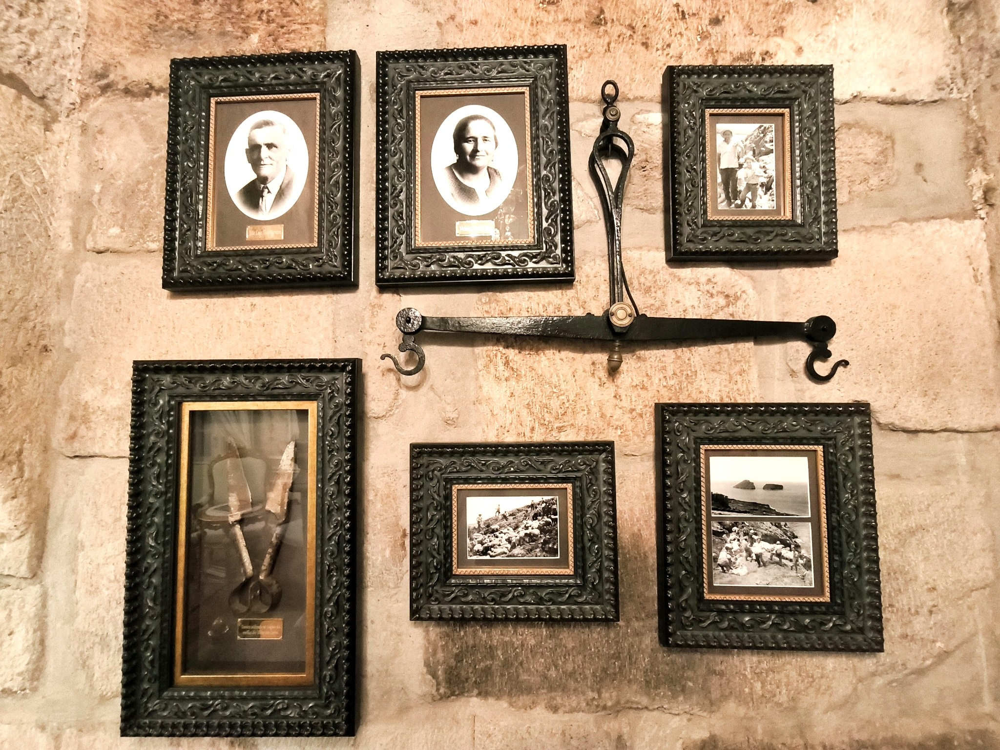
The Thread Across Islands and the Ancestral Bedspread
The crown jewel of this heritage is our traditional bedspread: an ancient family heirloom reflecting the umbilical bond between two Azorean islands. Pure wool sheared and spun in Terceira traveled across the channel to São Jorge, where master weavers crafted it patiently on traditional handlooms.
In São Jorge, a lã era tingida exclusivamente através de técnicas e pigmentos vegetais da flora local. O tom rosa e violáceo que ainda hoje se admira resulta da urzela (Roccella tinctoria), um líquen colhido nas falésias rochosas à beira-mar. Uma relíquia que guarda em cada fio o labor e a alma dos nossos antepassados.
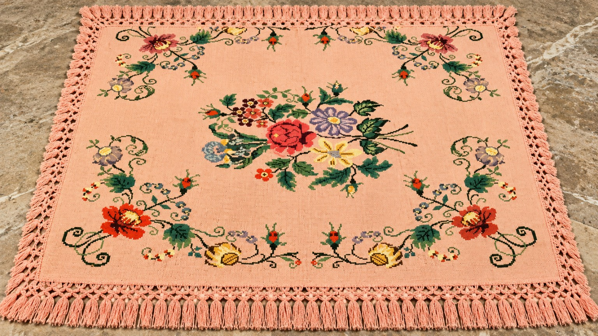
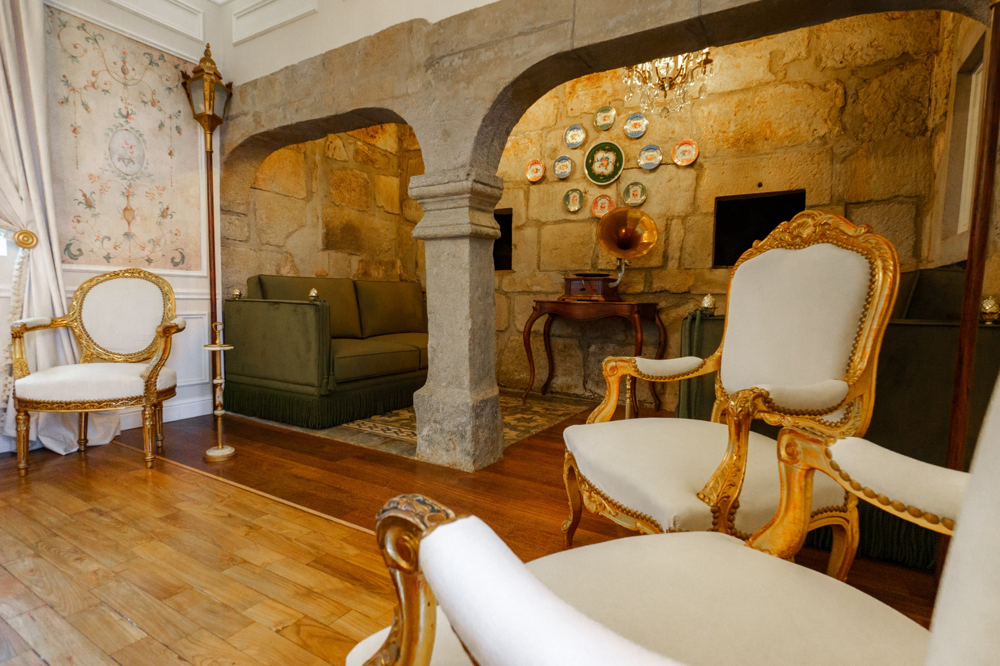
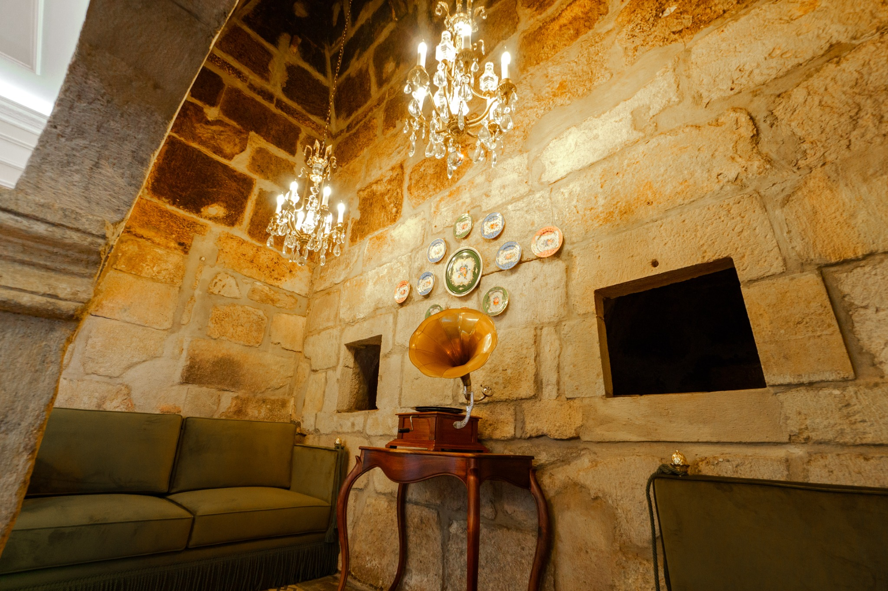
The fireplace in the shape
of “praying hands”
Between stone masonry and heritage architecture, subtle details ask to be discovered: the fireplace sculpted in the form of “praying hands”.
Located in the Oven Room, it has become a signature element of this space. An uncommon architectural solution, easily overlooked at first glance, but gaining profound meaning once the history of the house is understood.
As you wander through the hotel, pause, observe, and look a second time. Here, architectural nuances are never mere details: they are fragments of a living story preserved by time.
Historic and exclusive
photographs
At Boutique Hotel Teatro, the photographs on the walls are not merely displayed to be seen. They are there to tell stories. They are windows into bygone eras, portraits, places, and moments that reveal the heritage of this residence.
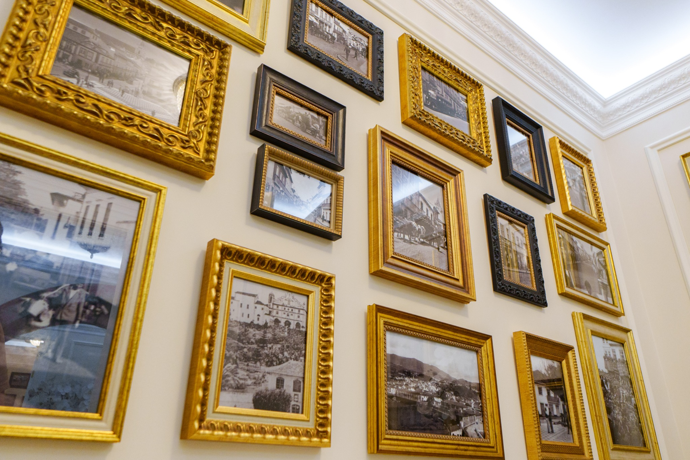
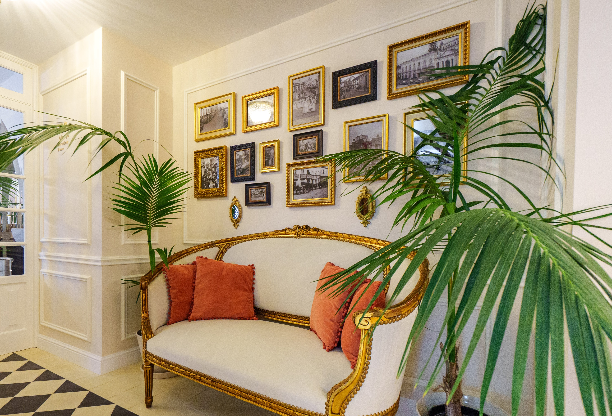
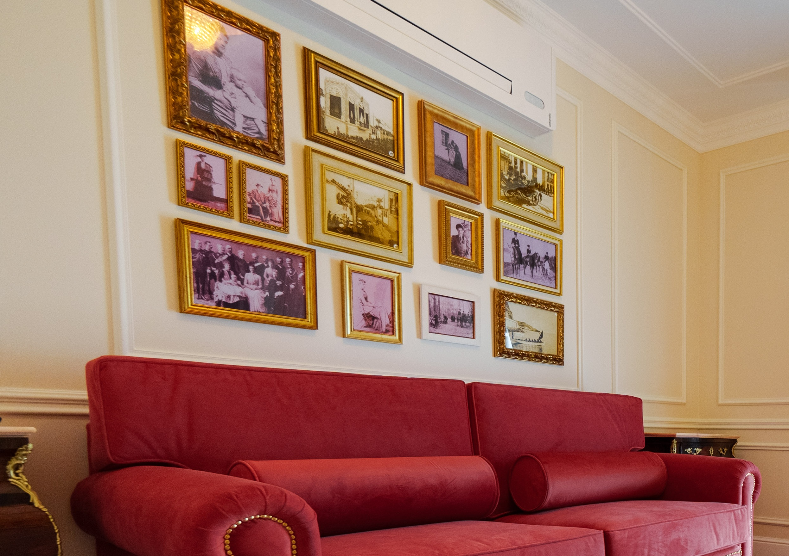
“Every photograph is a small window into another time.”
The Royal Pipes
Not all history meets the eye. Among the relics preserved within the house are two royal pipes (canos reais), hydraulic conduit elements linked to ancient water conveyance and drainage networks.
The term “Cano Real” belongs to an ancient tradition of hydraulic infrastructure. In Terceira, historical references document channel systems and a “Cano Real” associated with public works in the early 17th century.
Today, these two pipes stand as discreet witnesses to a history that does not always lie on the surface — subtle yet revealing traces of how spaces were built, used, and inhabited across centuries past.
At Boutique Hotel Teatro, history reveals itself where least expected: nestled between stones, walls, and structures time could not erase.
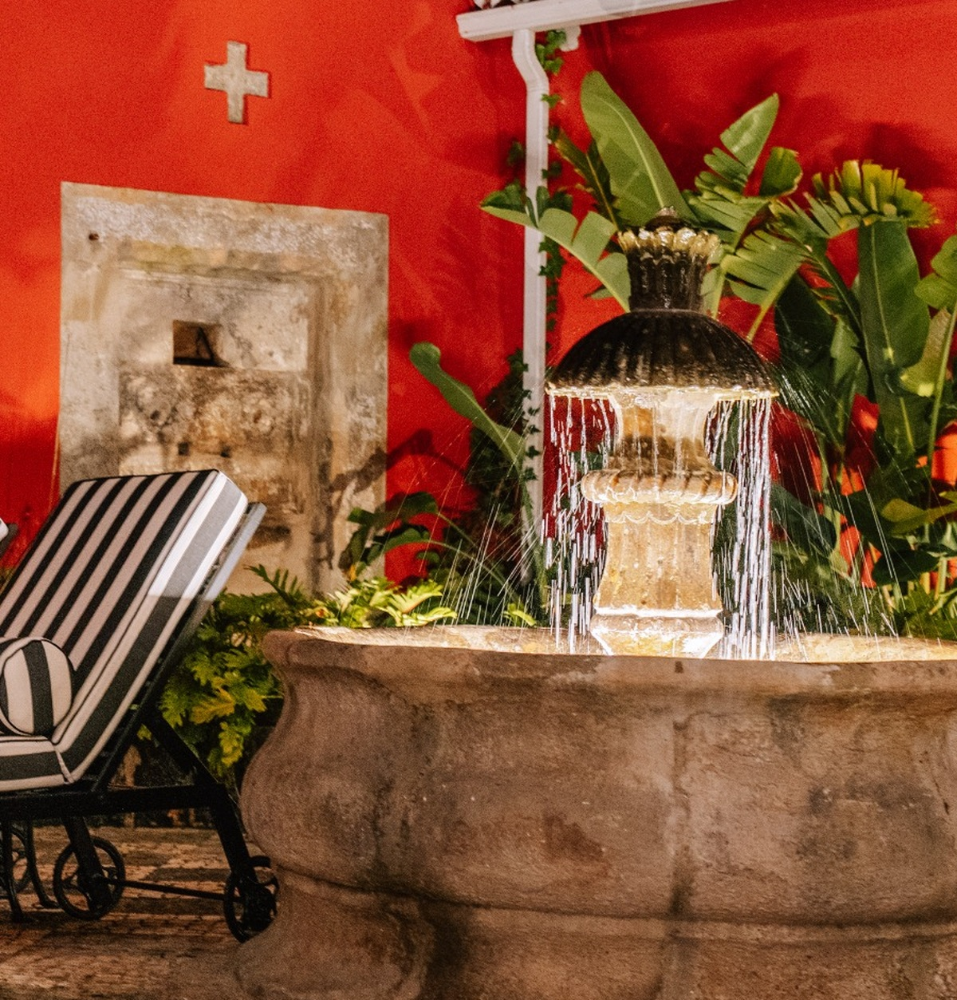
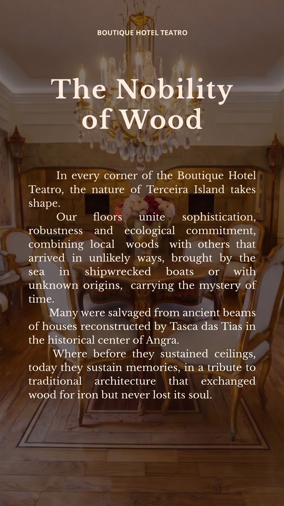
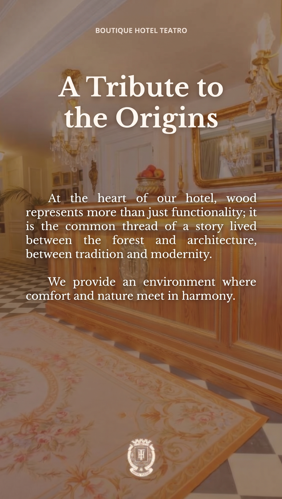
Timber with soul
At Boutique Hotel Teatro, wood is far more than an element of architecture. It is presence, texture, and living memory — a thread binding nature to architecture, heritage to modernity, and the past to how this space is experienced today.
Distinct species of timber were selected for their resilience, beauty, and authentic relationship with the region’s identity. Across flooring, bespoke furnishings, paneling, and delicate details, each application honors the original structure while lending it a contemporary voice.
Timber from other homes
Some of the timber that is now part of the hotel already carried a rich history before arriving here. Beams were reclaimed from historic houses restored by Tasca das Tias in the historic center of Angra. Where they once supported roofs and structures, today they sustain memories.
Reusing is also an act of preserving matter, markings, textures, and the enduring bond with Angra’s traditional architecture. In this house, historic timbers continue to tell that very story.
From Wood, the home
Acacia, pohutukawa (metrosideros), rosewood, tree heath (urze), and vinhático are integrated into the project as timbers tied to Terceira’s botanical identity. They bring distinct textures, warm hues, and unique characteristics, drawing the hotel closer to the land where it was born.
Each species carries its own personality. Together, they shape contemporary spaces anchored firmly in the soil of the Azores.
Every wood in its place
Sucupira was chosen for the staircases for its density and structural resistance. In the furnishings, Pitch Pine adds texture and character, while variations of Beech contribute to brighter, balanced, and welcoming ambiances.
These choices go far beyond utility: durability, texture, tone, and tactile sensation turn raw matter into an essential part of the guest experience.
To preserve is to continue
Preservation is also a way forward. Reclaiming materials and integrating elements that once belonged to the history of this place extends the life of what already existed, lending it renewed context and purpose.
Certain timbers were reclaimed. Architectural elements were preserved. Other materials were selected for their harmony with the island and the identity of the residence.
These deliberate choices tell a larger story: building the present does not require erasing the past. Here, sustainability and memory meet in the quiet act of honoring what exists and finding new ways to allow it to endure.
Because preserving is not leaving everything untouched. It is ensuring that what matters endures into tomorrow.